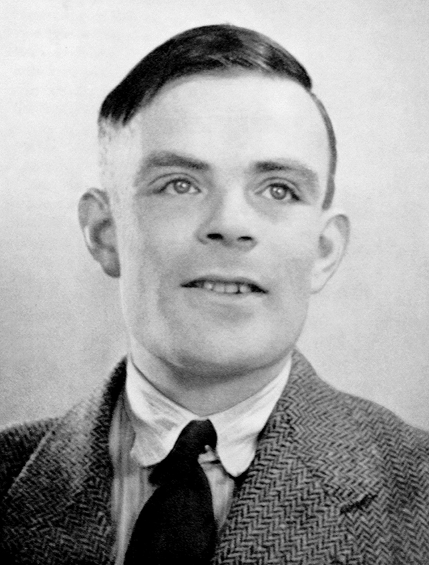

Who was Alan Turing?

×

Alan Turing was an English mathematician and the founder of artificial intelligence and theoretical computer science. During World War 2, he was played a major part in breaking the Enigma code, which was used alot by the Germans, and leading to the English and there allies beating Nazi Germany.
What happened in Alan Turing’s early years?
Alan Turing was born on 23 June 1912 in Maida Vale, London. He was intelligent from his very first school days. When he was 9, his headmistress from his school (St Michael's Primary School in Hastings) reported: ‘I have had clever boys and hard-working boys, but Alan is a genius’. In 1922, he moved to Hazelhurst Preparatory School where he became interested in chess. He spent hours working out complex problems on his own. When he was 13, he moved again to Sherborne School in Dorset. Although his maths teacher (Mr Randolph) explained him as a ‘genius’, this meant little to a school that worked especially on humanities and classics. His teachers would often see him doing nothing in lessons, and then get really high scores in exams.This often annoyed them.
His University Career
In 1931, Turing attended King's College, in the University of Cambridge, to study maths. At King's, he settled in much better as he succeed with both his work and social life. Turing enjoyed engurence sports. He took up rowing and became an excellent long distance runner. He also involved himself in the peace movement, joining an Anti-War Council, which encoureged chemicals and munitions workers to strike, if and when war was declared due to the rise of Hitler. Turing graduated in 1934 from King's with a first-class honours degree, and was elected a Member of King's College at the age of 22.
In 1936, Turing went again to study mathematics, this time at Princeton University, in New Jersey, where he got his Ph.D. in 1938. During his time at Princeton, he developed the motive of a ‘universal computing machine’ that could solve complex calculations, and make life easier. This would now become known as the Turing machine, which was the basis today's modern digital computer. Turing also studied cryptology (the study of codes and cyphers which can be used to send secret messages) and built three quaters of the stages of an 'electro-mechanical binary multiplier'.
What did he do?
In 1939, Turing was asked to join the Government Codes and Cypher School which was a British code-breaking organisation. This was moved to Bletchley Park when war was declared against Germany on 3 September. Turing’s most famous achievement at Bletchley was cracking the ‘Enigma’ code. The Enigma was a machine used by the Germans to send messages securely. With his fellow code breaker, Gordon Welchman, Turing developed the Bombe, a machine which from late 1940, was decoding all messages sent by the Enigma machines and therefore let the English read them.
Famous Quotes by Alan Turing
- I propose to consider the question, 'Can machines think?
- We can only see a short distance ahead, but we can see plenty there that needs to be done.
- Science is a differential equation. Religion is a boundary condition.